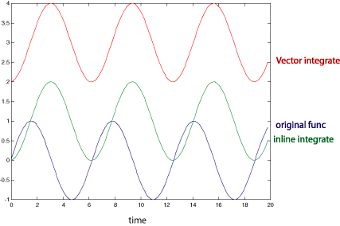

A simple Integration usage example.
|
The code below ouputs the data shown in the below figure

Remeber that the integration is valid up to a constant (and that constant cannot be known without some other parameters). So the figure is showning the correct integration 'functional form' upto an addative constant. Also note that I added '2' to the vector data so it is visible.
|
#include "blochlib.h"
//the required 2 namespaces
using namespace BlochLib;
using namespace std;
//a function class to integrate (here it is sin(x))
//NOTE:: you need to define the "double operator(double)" function
class F
{
public:
F(){}
double operator()(double x)
{ return sin(x); }
};
int main()
{
//declare the Integrate object first and then reuse it as nesseasry
Integrate<F> myint;
ofstream out("out");
//first out spread in time
double dt=.1, a=0, b=20, integ=0;
Vector<double> ts(Spread<double>(a,b,dt));
//we could integrate this way
//using a spread of values
Vector<double> intV=myint.integrate(ts);
int i=0;
//here we integrate F from t=0..20 in step sizes of dt=0.1
F myF; //so we can get the unintegrated values
while(i<ts.size()-1)
{
//to Integrate from t1 to t2 simply use the "operator(t1, t2)" function
//or use the function "integrate(t1, t2)"
//integ+=myint(a, a+dt);
//or supplimentary
integ+=myint.integrate(a, a+dt);
//print "<time> <orig> <integ1> <intV>" to file
//we add '2' to see the two integrations at the same time on
// a graph
out<<ts[i]<<" "<<myF(ts[i]+dt/2.0)<<" "<<integ<<" "<<intV[i++]+2<<endl;
a+=dt;
}
return 1;
}
|